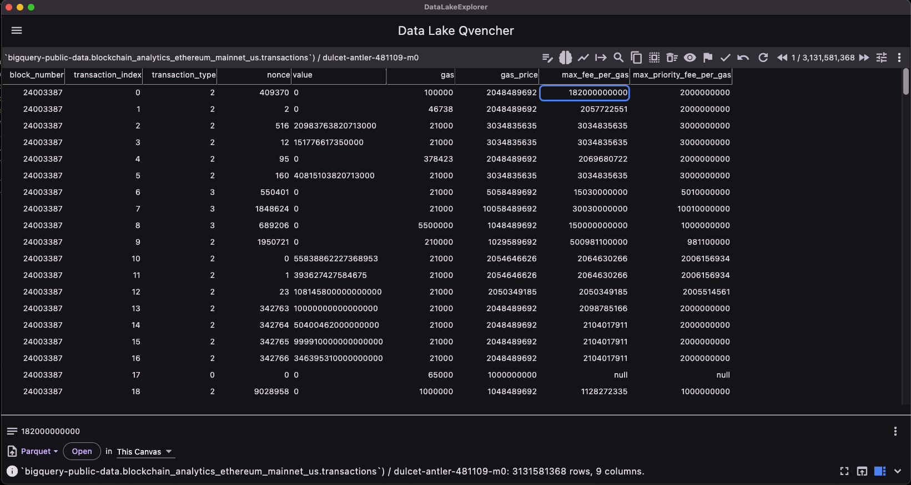

Data Lake Qvencher does not load entire tables into memory. So you can browse through billions of records, as long as the backend database supports efficient query processing and pagination.
The following example shows browsing a table of over 3 billion records:
